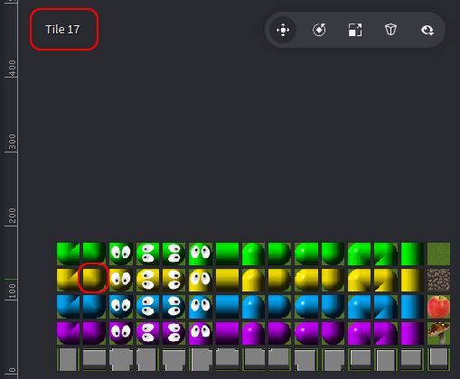

Tutorials for 2D games projects
Worm | Spawning player 1.
The worm will be created entirely in code by changing a tile on the tilemap to be a worm segment as needed. This will mean the worm won't move smoothly. Instead the worm's head will quite obviously jump into the next tile on each update. This will give it a very classic feel and is ideal for demonstrating how tilemaps can be manipulated in code.
- In the assets panel, right click 'main' and select, 'New Script'. Name the script, 'worm1'.
Each worm will have it's own script. This is the easiest way to create a multiplayer game because each script can have it's own '.self' attributes making it very easy to manage the changing variables for each player. The disadvantage is that we are duplicating our code each time we introduce a new player into the game. In a four player game we will have duplicated most of the code four times. Usually this is considered bad practice and we should really be using an alternative approach to avoid any code duplication:
- Functions - passing by value the player number and using the same functions for each worm.
- A factory to spawn multiple instances of the worm, passing the initial values into the constructor.
However, to keep things simple and to focus mainly on learning about tilemaps we will accept the code duplication in this development.
- Change the init function to initialise a new worm.
function init(self)
msg.post(".", "acquire_input_focus")
self.segments = {} -- Worm segment queue
self.alive = false -- Alive or dead
self.base_sprite = 0 -- The first sprite in the tile source
self.grow = false -- Whether the worm is growing in the next update
self.direction = {} -- The direction the worm is going x,y / +-1
self.input_queue = {} -- Inputs to process
self.speed = 7 -- Speed of the worm, larger number = faster
self.timer = 0 -- Timer increments on each update
end
The script is initialised to accept inputs.
Several attributes are initialised for use later. Each is explained in a comment to make the code more maintainable.
As we use these attributes in code later we'll explain them in more detail.
- Above the init function, create a new function to spawn the player.
function spawn_1up(self)
-- Initial starting position of 4 segments
self.segments = {
{x = 5, y = 25},
{x = 5, y = 24},
{x = 5, y = 23},
{x = 5, y = 22} }
-- Draw initial start position
tilemap.set_tile("/field#tilemap", "layer1", 5, 25, self.base_sprite + 8) -- Set tail
tilemap.set_tile("/field#tilemap", "layer1", 5, 24, self.base_sprite + 14) -- Set middle
tilemap.set_tile("/field#tilemap", "layer1", 5, 23, self.base_sprite + 14) -- Set middle
tilemap.set_tile("/field#tilemap", "layer1", 5, 22, self.base_sprite + 3) -- Set head
-- Set initial direction
self.direction = {x = 0, y = -1}
-- Ready worm for updating
self.alive = true
end
Each segment of the worm is stored in a table, also known as an associative array. We will be using the table as a queue data structure. Each element of the array holds an x and y value for the position of a worm segment. This is similar to a two-dimensional array, but it is easier to read code with descriptive keys x and y than simply using array indexes 0 and 1. As the worm moves, new segments are added to the back of the queue and tail segments are removed from the front of the queue. That handles the worm in memory for movement purposes.
We also need to display the worm segments on the screen. Note how it is possible to manipulate the tilemap directly in code using 'tilemap.set_tile'. The tilemap itself is also a 2D array.
.set_tile takes five parameters: the url of the tile map, the layer of the tile map, the x position of the tile, the y position of the tile and the number of the tile to set from the tile source.
Each tile in the tile source is numbered automatically by Defold starting from 1 in the top left, incrementing right.

Here we can see tile 17 is the yellow worm's bottom-right segment.
It might seem odd that we need the spawn_1up function at all. In the previous tutorials we initialised the game object in their init function. The reason we are creating a new function in this tutorial is because we want to spawn the player only if they are in the game. i.e. player 2 is only spawned in a 2-4 player game, but not in a 1 player game. If we put the code to change the tileset in the init function it will show the player on the tile map regardless of whether they are in the game or not.
We are going to use a message to tell the script to spawn the player if it needs to, even though all worms will be initialised by their init function initially.
- Update the on_message function to receive the message from the controller.
function on_message(self, message_id, message, sender)
if message_id == hash("spawn_1up") then
spawn_1up(self)
end
end
When a message is received from the game controller to spawn the player it runs the spawn function.
Be careful to note here that our message is not simply, "spawn". If we have more than one message receiver listening for a "spawn" message, i.e. the other worms, they will all react to it!
Using "spawn_1up" ensures only player 1's worm will react to this message.
We need to add the worm to the game.
- In the assets panel, double click, 'game.collection'.
- In the outline panel, right click, 'Collection' and select, 'Add Game Object'.
- In the properties panel, change the 'Id' property to, 'worm1'.
- In the outline panel, right click, 'worm1' and select, 'Add Component File'.
- Select, '/main/worm1.script' and click, 'OK'.
Finally, the controller needs to spawn the worm.
- In the assets panel, double click, 'main.script'.
- Find the comment in the code, '-- Insert code to spawn players here later'. Underneath this line, add code to spawn the player.
msg.post("game:/worm1#worm1", "spawn_1up")
This line sends the message, "spawn_1up" to the game collection, worm1 object, worm1.script.
- Save the changes by pressing CTRL-S or 'File', 'Save All'.
- Run the program by pressing F5 or choosing, 'Debug', 'Start / Attach' from the menu bar. You should be able to select '1up' and see player 1's worm spawn.

The next stage could be to make the worm move. However, to make it easier to follow the code editing required, we'll handle the inputs next instead. Stage 4b >
 Craig'n'Dave | Version 1.3
Craig'n'Dave | Version 1.3